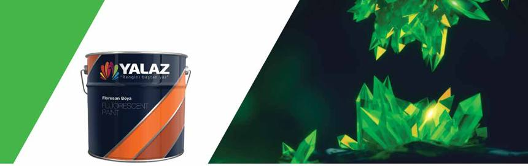

Флуоресцентная краска
Яркая флуоресцентная краска с высокой видимостью при дневном и искусственном освещении. Содержит специальные флуоресцентные пигменты, преобразующие УФ-излучение в видимый свет. Обеспечивает максимальную заметность разметки и сигнальных элементов даже в условиях плохой видимости.